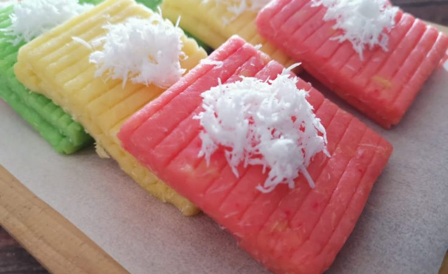

Getuk Lindri Recipe

Getuk lindri is a traditional food from Wonosari Village made from cassava, this food is usually served at big holidays such as wedding receptions, etc. The characteristic of this food is its soft texture and sweet taste
Ingredients
- 500 gr cassava
- 100 gr sugar
- grated coconut meat
- vanilla essence
- biscuit crumbs
- brown sugar syrup
- chocolate ice cream (optional)
Base Ingredients
- 100 gr biscuit crumbs
- roasted coconut meat shreds
- 1 tbsp sugar
- 4 tbsp melted butter
Steps
- For the Getuk base, mix all the base ingredients, then flatten the box flat on a plastic mica tray. Put it in the refrigerator
- To make Getuk, put the cassava in the steamer. Steam until cooked and tender, remove the middle bone. Mash it
- Mix sugar, steamed grated coconut and vanilla essence, stir until evenly mixed. Then put it in the mashed cassava. Stir again until smooth
- Shape the getuk until it resembles a pipe (diameter 1.5 cm, length 12 cm) then coat with steamed grated coconut, set aside
- Take the base from the refrigerator, cut it into 2 x 12 cm squares
- place the getuk on the base
- Finished!